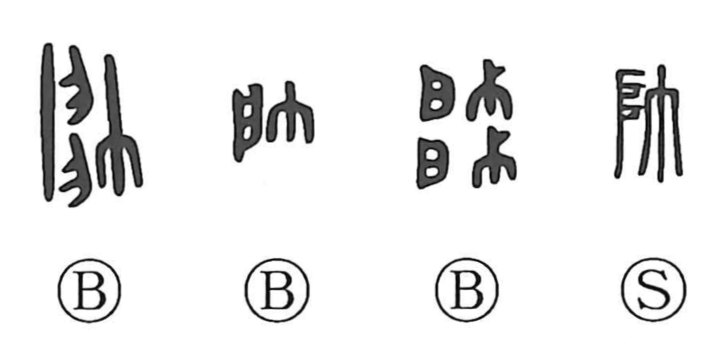

帥

Kun: | On: sui
commander ・ commander in chief ・ to lead ・ handsome
Explanation
Shirakawa reads 帥 as a compound of 自 and 巾. The upper part is not the 'meat' element seen in 師 but rather approximates the single-leaf 戸 found in 啓, evoking the one-panel door of a household shrine. The character thus depicts a cloth being applied to wipe and purify those shrine doors—a scene of ritual cleansing. From this act of presiding over purification arose the sense of standing at the head and leading, hence 'commander'; the graph is also used in place of 率, carrying the meanings 'to lead' and, by association, 'to follow.'